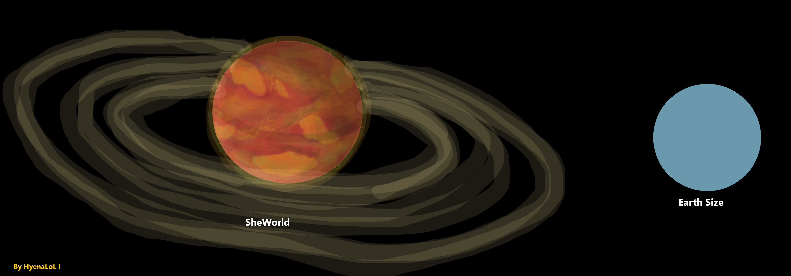
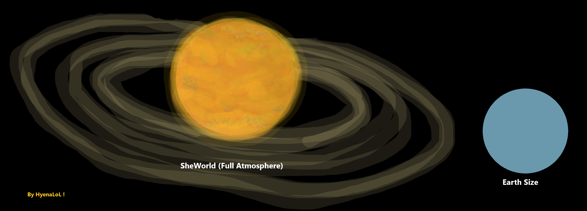
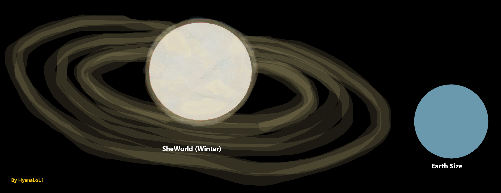

SheWorld - Main -
Content -
- SheWorld - Main.
- SheWorld - Seasons.
- SheWorld - Biosphere.
SheWorld - Main -



Type :
Habitable planet of my project SheFurrs. homeworld of the SheFurrs.
Size :
Slightly larger than Earth.
Location :
Between She-2 in the Red Zone and the inner boundary of the Blue Zone, positioned near the center of the Green Zone.
Orbit :
Highly elliptical not circular, one side of the orbit approaches the Red Zone, the opposite side stretches almost into the central Blue Zone. This creates extreme seasonal and environmental cycles. Axis rotation ~15 hours (fast day/night cycle).
Planet Identity :
SheWorld is a world of SheFurrs, adaptation, survival, hyper-predators, parasites, toxins, corrosive chemistry, invasive ecosystems, and constant environmental violence. This is not a gentle biosphere this is a biosphere that fights back.
Atmosphere :
Extremely harsh, chemically aggressive, toxic, oxidizing, filled with spores, frequent oxidized rains. Coloration yellow, orange, partially green depending on light angle. Have storms visible from orbit in colors: green, red, orange, yellow, purple. The SheWorld have magnetic storms on she's poles. At night the atmosphere becomes almost invisible unless storms are active, very dense atmosphere creates long periods of darkness or half-darkness, biolumen is a primary survival tool for many species.
Surface :
Highly rocky, mountainous, uneven terrain, covered in cracks, fissures, unstable cliffs, frequent geysers ejecting chemical mixtures, has chimical great lakes and swamps. Coloration is orange, red, yellow.
Activity :
Strong magnetic field, rings.
Moons :
No moons only scattered asteroid chunks orbiting the planet as she's rings.
Water & Liquids :
Water is not water it is a thick mixture full of compounds, impurities, and biological material. have gigantic lakes, filled with murky, rotten-colored liquid & swamps, rivers flow with chemical slurry. Rains: acidic, corrosive, capable of dissolving non-native life like digestive acid.
Conditions :
Frequent earthquakes stronger than Earth's, meteor showers common, radiation medium-light level, storms powerful frequent, gravity roughly Earth-like, light of the star is extremely bright but the dense atmosphere often blocks it.
Orbital History :
Originally SheWorld did not have this extreme orbit. Long ago when life was only microbial and early flora existed, two gas giants near the Green/Blue Zone boundary collided and merged into the super gas giant She-4-G. This event did not drastically change SheWorld's orbit immediately but after the merger the new giant's gravity began pulling the orbit into an elongated shape. SheWorld became influenced by both the star and the super gas giant. The planet is not torn apart instead, it shifts between gravitational zones in a stable but stretched orbital pattern. Periodically SheWorld passes through regions where the giant's influence increases, this created the extreme seasons and environmental violence that define the planet.
SheWorld - Seasons -
Seasons (caused by elliptical orbit) -
Summer Perihelion -
Planet approaches to Red Zone. Equator up to +80°C, Poles +50 to +30°C. Much brighter and lighter, day becomes longer and more illuminated.
Autumn -
Planet moves away from the Red Zone. Equator heat drops to +50°C, Poles +20 to +8°C. Frequent dust storms and chemical rainstorms.
Winter Aphelion -
Planet reaches the Blue Zone of coldness. Equator down to -30°C, Poles -50 to -60 to -80°C, but can be colder. Ice storms like big chimical iced chunks are common. Most life enters anabiosis, also SheFur enters anabiosis but in theyre way. Winter is short but extremely intense.
Spring -
Similar to autumn but in reverse. Life awakens from anabiosis and resumes activity.
SheWorld - Biosphere -
SheWorld is not just an invasive biosphere, it is a hard assimilant world.
The organisms of this planet naturally carry spores of their ecosystem. These spores spread wherever the species travel, allowing SheWorld's flora to begin growing on foreign worlds. The planet does not conquer through war, it conquers through assimilation.
Assimilation Process -
Spore deposition, spores settle on a surface - Flora emergence, early SheWorld flora begins to sprout, rooting into the environment - Light fauna appears, small invasive organisms follow as the ecosystem stabilizes - Rapid expansion, growth accelerates to a global scale the world becomes covered by SheWorld's ecosystem - Atmospheric alteration, new flora releases SheWorld-type atmospheric compounds, changing the air composition - Climate shift, the planet's climate begins to transform toward SheWorld-like conditions - Total assimilation, the original biosphere collapses or is overwritten - New hives and new SheFurrs can just claim the new territory. This process is inevitable once spores take hold.